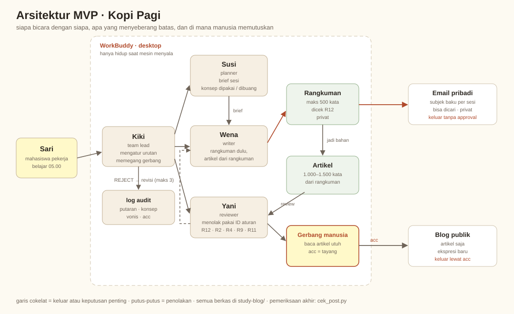

Kopi Pagi
Modul kuliah itu kelas yang berjalan tanpa guru. Kelas butuh ritual pembuka untuk menyiapkan kepala. Modul tidak punya siapa pun untuk melakukannya. Jadi ritualnya saya pindahkan ke dalam materinya sendiri.
Pembuka
Halo. Saya Sari, pengembang Kopi Pagi.
Kopi Pagi itu alat bantu belajar untuk mahasiswa yang kerja siang dan kuliah malam. Masukannya satu PDF materi kuliah. Keluarannya dua bacaan: rangkuman maksimal 500 kata yang masuk ke email saya, dan artikel 1.000 sampai 1.500 kata yang tayang di blog. Kalau dipersempit, kerjanya cuma dua: bikin blog, dan bikin konten belajar pendek dari materi kuliahnya sendiri.
Yang ingin saya ceritakan di halaman ini bukan hasilnya, tapi cara saya sampai ke bentuk ini, dan kenapa jawabannya harus begini dan bukan ringkasan biasa. Urutannya sengaja: masalahnya dulu, syaratnya kedua, sistemnya dan buktinya belakangan.
Tiga bahan yang saya pakai datang dari dunia yang jarang dipertemukan: teori belajar dari psikologi, teknik bercerita dari creative writing, dan disiplin modul dari teknologi pendidikan. Halaman ini menunjukkan bagaimana ketiganya dipakai untuk menjawab dua hal yang lebih keras: apakah ini layak dibiayai, dan apakah ini bisa dijalankan mesin.
1. Latar belakang
Delapan jam kerja, macet, lalu kelas malam jam 18.30. Begitu duduk, dosen sudah membuka video materi, modul tiga puluh halaman, pretest, kuis, tugas, forum, posttest. Semua mau selesai malam itu juga.
Kalau mau beres, butuh dua sampai tiga jam konsentrasi penuh. Baterai otak saya tinggal lima persen sejak jam tujuh.
Saya bukan malas. Saya capek.
Jalan pintas sempat saya coba. PDF-nya saya masukkan ke NotebookLM dan ChatGPT. Hasilnya lebih pendek, dan itu benar. Tapi setelah dibaca, kening saya tetap berkerut. Kering. Penuh istilah asing yang tidak dijelaskan. Dan tidak ada satu alasan pun untuk peduli.
Ringkasan memendekkan bacaan. Masalah saya bukan panjangnya.
2. Ini masalah desain pembelajaran
Kalau panjang bukan masalahnya, lalu apa? Modul itu dirancang untuk pembaca yang datang dengan kepala segar dan dua jam kosong. Saya datang dengan kepala penuh dan tenaga yang tinggal sisa. Selisih itu yang harus ditutup, dan menutupnya berarti mendesain ulang materinya, bukan memotongnya.
Empat syarat desain, dan semuanya punya dasar.
Satu. Prapembelajaran dioptimasi, bukan dilompati. Kepala harus disiapkan sebelum kelas, supaya muat. Ausubel [1] menyebutnya advance organizer: faktor paling menentukan dalam belajar bukan isi materi, tapi apa yang sudah dipegang pembaca sebelum materi itu datang. Mayer [2] menyebut sisi praktisnya pre-training principle: orang belajar lebih baik kalau nama dan ciri konsep kunci sudah dikenal sebelum materi utamanya dibuka.
Dua. Satu unit, batas lima menit. Microlearning, istilah dari Theo Hug [3], bukan video satu jam yang dipotong-potong. Satu kesatuan makna yang berdiri sendiri: satu konsep, maksimal lima menit, ditutup satu aksi kecil. Dasar keduanya beban kognitif Sweller [4]: materi padat dibaca sebagai ancaman, bukan sebagai ilmu.
Tiga. Datang pagi, bukan malam. Kapasitas memutuskan habis dipakai seharian. Jadwal 05.00 lebih masuk akal daripada jam sepuluh malam karena alasannya praktis, bukan soal disiplin.
Empat. Diri sendiri harus diberi pagar. Knowles [5] menyebut self-directed learning sebagai kompetensi yang harus dilatih, bukan bakat yang muncul sendiri begitu orang dewasa. Panduan yang dilepas tanpa ritme akan gagal, sekaya apa pun isinya.
Satu dari empat syarat itu menuntut sesuatu yang tidak bisa dikerjakan modulnya sendiri: menyiapkan kepala sebelum materi datang. Di kelas, kerja itu jatuh ke guru. Di modul, tidak ada siapa pun.
3. Yang tidak dimiliki modul: lima menit pertama
Ini bagian yang menyambungkan semuanya, dan yang paling sering dilewati.
Di kelas tatap muka, lima menit pertama tidak dipakai untuk mengajar. Dipakai untuk menyiapkan kepala: sapaan, cek keadaan peserta, satu pertanyaan pembuka. Terlihat seperti basa-basi. Sebenarnya bukan. Krashen [6] menyebut fungsinya menurunkan affective filter: selama peserta merasa terancam, cemas, atau belum aman, materi sebaik apa pun tidak masuk.
Modul PDF tidak punya lima menit itu. Dia dibuka langsung di halaman satu, di tengah hari yang penuh, tanpa siapa pun menyiapkan kepala pembacanya. Jadi kepala pembaca masuk dalam keadaan penuh, dan modulnya datang sebagai ancaman, bukan sebagai bahan belajar.
Dari sini kesimpulannya keluar sendiri:
Kalau ritual pembuka itu wajib di kelas, dan modul tidak punya guru untuk melakukannya, maka ritualnya harus dibawa oleh bendanya sendiri.
Di situlah posisi artikel blog. Bukan ringkasan yang dipercantik. Artikel itu ritual pembuka yang ikut menempel di materinya. Dia menyiapkan kepala sebelum modul dibuka, memberi tempat untuk menggantung konsep sebelum konsepnya datang, dan menutup dengan satu pertanyaan supaya pembaca membawa sesuatu ke sesi berikutnya.
Ini juga yang membuat urutannya jelas. Artikel dibaca pagi, sebelum kelas. Bukan sesudah, bukan sebagai pengganti. Fungsinya menyiapkan, bukan menggantikan.
4. Kendaraannya cerita
Kalau ritualnya harus dibawa oleh teks, pertanyaannya jadi: teks bentuk apa yang bisa melakukan itu?
Ringkasan tidak bisa. Ringkasan memindahkan isi, tapi tidak menyiapkan kepala. Dia mengasumsikan pembaca sudah siap dan cuma butuh yang lebih pendek. Daftar definisi juga tidak bisa, karena definisi menuntut kepala yang tenang, sementara kepala pembaca kita sedang tidak tenang.
Cerita bisa. Kaitnya bekerja di dua waktu: saat dibaca, dan sesudahnya.
Saat dibaca.
- Transportasi naratif. Green dan Brock [7]: pembaca yang terangkut ke dalam cerita berhenti berdebat dengan isinya. Dia menerima sambil berjalan, bukan menolak dulu baru mempertimbangkan.
- Kata dan gambaran, dua jalur. Paivio [8]: kata dan gambaran mental disimpan terpisah dan saling menguatkan. "Super ego" jadi nempel begitu dia punya wajah, yaitu kakak yang memarahi adiknya.
- Celah rasa penasaran. Loewenstein [9]: orang meneruskan karena ada pertanyaan yang belum terjawab. Satu pertanyaan di akhir artikel bukan hiasan, itu mesin yang menarik pembaca ke sesi berikutnya.
Sesudah dibaca.
- Disimpan sebagai peristiwa, bukan definisi. Tulving [10] membedakan memori episodik dan semantik. Definisi tersimpan sebagai fakta lepas. Cerita tersimpan sebagai kejadian: ada waktu, tempat, orang. Kejadian lebih mudah dipanggil lagi.
- Menempel di cabang yang sudah ada. Bartlett dan Piaget [11], [12]: informasi baru bertahan kalau bisa disambungkan ke skema lama. Pembaca menemukan cabang baru tersambung ke cabang lama yang sudah dia punya, dan otaknya memberi hadiah atas sambungan itu.
Lima kait, satu kesimpulan: bukan memendekkan materi, tapi mengganti kendaraannya.
Ada satu hal lagi, dan letaknya di luar cerita. Roediger dan Karpicke [13] menunjukkan bahwa memanggil ulang lebih mengikat daripada membaca ulang. Itu alasan latihan soal masuk roadmap, bukan sebagai pelengkap. Cerita memasang kait; memanggil ulang mengunci kaitnya.
Pengalaman pribadi saya cocok dengan ini. Yang membuat saya bertahan bukan ringkasan yang rapi, tapi catatan yang membuat saya ingin tahu kelanjutannya. Saya tidak tahu nama teorinya waktu itu. Sekarang saya tahu, dan alasan itu yang saya jadikan spesifikasi.
5. Masalah bisnis: spesifikasi itu mahal diproduksi
Masalah pedagogi memberi saya daftar syarat. Masalah bisnis muncul dari harga memenuhi syarat itu. Dua hal ini berbeda, dan mencampurnya membuat seluruh proposalnya kabur.
| Pembedanya | Isinya | Sifatnya |
|---|---|---|
| Masalah pedagogi | Keluarannya belum cocok dan belum menempel | Soal mutu |
| Masalah bisnis | Untuk mencapai mutu itu, dibutuhkan satu desainer instruksional per sesi | Soal biaya dan pasokan |
Untuk satu sesi yang layak, seseorang harus membaca modul, memilih konsep mana yang dipakai dan mana yang dibuang, menulis ulang dalam bentuk cerita, lalu memeriksa apakah hasilnya melanggar kaidah. Itu penilaian seorang desainer instruksional. Per sesi. Per mata kuliah.
Sisi permintaannya besar. Jumlah mahasiswa pekerja di Indonesia jauh lebih besar daripada jumlah kampus yang membuka kelas malam. Sisi pasokannya yang jadi soal. Orang yang paham microlearning sekaligus bisa menulis dengan suara manusia sangat sedikit, dan jam kerjanya tidak bisa dipecah.
Jadi tiga syarat harus dipenuhi sekaligus:
- Cocok. Pas dengan waktu dan energi persona, bukan pas dengan selera desainer.
- Nempel. Dipahami dan diingat, bukan sekadar lebih pendek.
- Berulang dan murah. Satu sesi selesai dengan biaya marginal kecil, bukan satu proyek per sesi.
Syarat ketiga inilah yang tidak bisa dijawab desainer manusia. Bukan karena mereka kurang mampu, tapi karena jumlahnya terbatas dan waktunya tidak bisa digandakan.
6. Masalah IT: memindahkan penilaian yang masih di kepala
Kalau bukan desainer manusia, lalu siapa? Di titik itu pertanyaannya berubah, dan pertanyaan yang paling sering diajukan justru yang salah: bagaimana AI menulis ringkasan. Itu sudah ada, dan hasilnya kering. NotebookLM mengoptimasi pemendekan, bukan pemahaman. Dia tidak punya standar pedagogi, tidak punya pemeriksa yang berhak menolak, dan tidak punya titik di mana manusia memutuskan.
Pertanyaan yang benar: bagian mana dari penilaian desainer itu yang bisa dipindahkan ke sistem?
Nonaka [14] menyebut pengetahuan yang belum bisa diucapkan sebagai pengetahuan tacit. Nyata, dipakai tiap hari, tapi tidak bisa diperiksa orang lain dan tidak bisa dijalankan mesin. Yang membuatnya bisa dipakai berulang adalah eksternalisasi: mengubahnya jadi aturan tertulis yang bisa dibaca, ditegur, dan dijalankan.
Jadi masalah IT-nya berbunyi: bagaimana mengubah penilaian desainer yang tacit menjadi aturan eksplisit yang bisa dijalankan mesin, diperiksa manusia, dan diaudit orang lain.
Pembagiannya jelas. Yang bisa diambil mesin: membaca sumber, memilih konsep, menulis dalam dua bentuk, memeriksa hasil terhadap aturan, mencatat setiap keputusan. Yang tidak boleh diambil mesin: memutuskan apa yang tayang.
7. Problem framing
Kalau semua itu dipadatkan jadi satu kalimat:
Bottleneck-nya bukan akses materi. Bukan panjang materi. Bottleneck-nya adalah penilaian desainer yang belum pernah ditulis sebagai aturan. Selama penilaian itu masih tinggal di kepala manusia, kerja desain tidak bisa dijalankan mesin, kualitasnya tidak bisa diaudit, dan biayanya tidak bisa turun.
Kalimat itu yang jadi dasar spesifikasi di bawah.
8. Spesifikasi
Sasaran sistem (goal statement)
Dari satu PDF materi 30 halaman, sistem menghasilkan dua artefak tervalidasi: rangkuman maksimal 500 kata dan artikel 1.000 sampai 1.500 kata, dalam satu kali jalan otomatis. Manusia hanya membaca dan memutuskan, 10 sampai 15 menit per sesi. Nol publikasi tanpa persetujuan. Biaya marginal untuk sesi berikutnya mendekati nol.
Kriteria keberhasilan yang saya ukur
| Kriteria | Ambang |
|---|---|
| Keluaran per satu PDF | 2 artefak: rangkuman dan artikel |
| Panjang rangkuman | ≤ 500 kata |
| Panjang artikel | 1.000–1.500 kata |
| Putaran revisi sebelum tayang | Maksimal 3, lalu naik ke manusia |
| Waktu manusia per sesi | 10–15 menit, hanya membaca dan memutuskan |
| Artikel tayang tanpa persetujuan | 0 |
| Konsep yang dipakai per artikel | Maksimal 2, sisanya dibuang |
| Cakupan rulebook | 13 pasal, 68 butir, bertambah setiap ada koreksi baru |
9. Kebutuhan, dan keputusan desainnya
Setiap angka di atas punya asal. Ini daftarnya, satu kebutuhan satu keputusan.
| Kebutuhan mahasiswa pekerja | Bukti | Keputusan desain |
|---|---|---|
| Waktu dan energi tersisa sedikit | Ritual harian 18.30 sampai 21.30 | Unit maksimal 5 menit; rangkuman 500 kata; artikel 1.000–1.500 kata |
| Kepala belum siap waktu materi dibuka | Pengalaman blank setelah hari kerja panjang | Prapembelajaran lewat cerita, bukan pengantar bab |
| Otak tidak bisa memutuskan di malam hari | Jendela pagi, kepenatan keputusan | Jadwal 05.00 Senin dan Kamis |
| Ringkasan kering, tidak ada alasan peduli | Uji coba NotebookLM dan ChatGPT | Artikel ditulis sebagai cerita, bukan definisi |
| Istilah asing bikin blank | Catatan sesi pertama | Istilah diperkenalkan lewat adegan, bukan glosarium |
| Materi menumpuk, tidak tahu mana penting | Modul 30 halaman per sesi | Planner membuang konsep, maksimal 2 yang dipakai |
| Takut isinya salah dan nama dosen bocor | Kekhawatiran privasi; nama dosen dan kampus tidak boleh ikut | Reviewer wajib menyebut nomor aturan; gerbang persetujuan manusia; lembar akuntabilitas |
| Tidak mau aplikasi baru dan tidak mau login | Hambatan adopsi | Jalan di WorkBuddy, email, dan blog statis |
| Tidak mau revisi berputar tanpa ujung | Batas kesabaran dan biaya | Maksimal 3 putaran, sisa masalah naik ke manusia |
Tidak ada fitur yang tidak bisa dilacak ke satu baris di tabel itu. Kalau sebuah fitur tidak punya baris, fiturnya tidak masuk. Dari situ sistemnya dirancang.
10. Desain sistem
Bentuknya. Satu expert WorkBuddy berisi satu skill dan empat peran mesin, plus satu peran manusia sebagai gerbang. Expert itu paket asisten yang dipasang sekali lalu dipakai berulang.
Empat peran mesin:
- Kiki sebagai editor in chief. Mengatur urutan, menjaga gerbang, satu-satunya yang saya ajak bicara.
- Susi sebagai planner. Menyusun rencana sesi: konsep mana dipakai, mana dibuang.
- Wena sebagai writer. Rangkuman dulu, maksimal 500 kata. Setelah lolos, artikel ditulis dari rangkuman itu, bukan dari PDF lagi.
- Yani sebagai reviewer. Boleh menolak hanya kalau bisa menyebut nomor aturan yang dilanggar, dan wajib meloloskan kalau tidak ada nomor yang dilanggar.

Kenapa empat, bukan satu. Satu AI yang menulis sekaligus menilai tulisannya sendiri tidak akan pernah bilang tulisannya jelek. Ini bukan teori. Versi pertama saya begitu, dan semua artikelnya lulus.
Rulebook sebagai bentuk eksternalisasi. 13 pasal, 68 butir. Setiap butir lahir dari satu koreksi saya atas hasil yang meleset. Contohnya: penutup artikel punya dua pertanyaan, saya minta satu, itu jadi aturan. Rulebook inilah yang mengubah penilaian yang tadinya cuma ada di kepala menjadi benda yang bisa dibaca mesin, ditegur manusia, dan diaudit orang lain.
Aliran data:
materi.pdf → rencana sesi (status draft) → menunggu setuju
→ rangkuman ≤ 500 kata → Yani cek → email ke saya
→ artikel 1.000–1.500 kata → Yani cek → saya baca utuh → setuju
→ tayang di blogState dan jejak. Folder pending/, approved/, dan audit_log.jsonl. Setiap sesi meninggalkan catatan: putaran, konsep yang dipakai, konsep yang dibuang, vonis, aturan yang dilanggar, siapa yang menyetujui, kapan.
Gerbang manusia. Rangkuman boleh langsung masuk email, karena penerimanya saya, dan saya memang belum tahu materinya. Artikel tidak boleh tayang sebelum saya baca utuh dan klik setuju. Keputusan terakhir bukan di mesin.
11. Implementasi
Dibangun di WorkBuddy, tanpa menulis kode.
Saya ceritakan masalahnya, WorkBuddy membuatkan expert-nya, saya pakai, lalu saya koreksi setiap kali hasilnya meleset. Koreksinya tidak saya simpan sebagai catatan pribadi, tapi saya jadikan aturan tertulis. Yang membuat hasil konsisten bukan prompt ajaib, tapi aturan yang bisa ditegur.
Tiga hal yang berubah saat implementasi:
- Blog dibangun sebagai situs statis dari berkas markdown, supaya tidak perlu server dan tidak perlu login.
- Rangkuman dikirim lewat email, bukan chat, karena chat menumpuk dan email punya subjek.
- Artikel ditulis dari rangkuman, bukan dari PDF lagi, supaya isinya tidak melebar.
Setelah tiga perubahan itu, saya jalankan satu sesi penuh dari awal sampai tayang.
12. Validasi
Hasilnya tidak mulus, dan itu bagian yang paling berguna. Sesi itu berjalan lima putaran pada 4 November 2026, materi Psikologi Anak sesi 3.
Log audit sesi 3
| Putaran | Pemeriksa | Vonis | Butir diperiksa | Temuan |
|---|---|---|---|---|
| 1 | Yani (mesin) | PASS | 34 | Lolos semua aturan. Ini kegagalan rulebook, bukan keberhasilan draft |
| 2 | Sari (manusia) | REJECT | tidak dihitung | 6 pelanggaran: R9.1, R9.3, R9.4, R9.5, R4.6, R2.6 |
| 3 | Yani (mesin) | PASS | 44 | 2 konsep, 1.373 kata, sapaan tanpa nama, nol em dash |
| 4 | Sari (manusia) | REVISI | tidak dihitung | 3 pelanggaran: R3.6, R10.3, R10.5 |
| 5 | Sari (manusia) | REVISI | tidak dihitung | 5 pelanggaran: R11.1, R11.2, R11.3, R11.4, R10.3 |
Angka 34 dan 44 di kolom keempat menghitung butir yang dijalankan untuk draft itu, bukan seluruh isi rulebook. Jumlahnya naik karena rulebook tumbuh di tengah sesi: R9 masuk setelah putaran 1, sedangkan R10 dan R3.6 setelah putaran 3.
Yang ditemukan di putaran 2. Draft dibuka dengan etimologi. Materi jadi subjek kalimat, bukan manusia. Ada paragraf satu kalimat abstrak. Istilah dijelaskan dengan istilah lain. Tujuh konsep masuk satu artikel. Ditutup dengan menyapa nama pembaca. Untuk menghindari nama itu, penulis menghapus sapaan sama sekali, dan itu justru membunuh keterlibatan.
Yang ditemukan di putaran 4. "Catatan Raka, mahasiswa semester satu" diulang di semua artikel. Garis waktu tidak konsisten: kakak pulang jam sebelas, tapi les jam sembilan. Dua subjudul tidak punya kalimat jembatan.
Yang ditemukan di putaran 5. Kalimat belibet dan kata ganti menggantung. Satu lubang logika ikut terbongkar: alasan seorang adik ditinggal tidak masuk akal, karena justru dia yang diantar les. Penutupnya diganti dengan versi langsung.
Apa yang berubah karena temuan itu. Rulebook naik versi empat kali dalam satu sesi:
- v1.0: lolos draft yang tidak bisa dibaca.
- v1.1: menambah R9 (kualitas penalaran).
- v1.2: menambah R10 (kerajinan cerita) dan R3.6 (identitas penulis tidak diulang).
- v1.3: menambah R11 (keterbacaan): batas 25 kata per kalimat, larangan kata ganti menggantung, kiasan yang bisa digambar, daftar frasa terlarang, tes pindah kalimat.
Konsep yang dipakai ada dua, yang dibuang enam, dan semuanya tercatat di log audit.
Kesimpulan validasi. Mesin tidak bisa dipercaya menilai kualitas penalaran sampai aturannya ditulis eksplisit. Yang menutup celah itu bukan model yang lebih pintar, tapi aturan baru dari koreksi manusia. Gerbang manusia tetap perlu, karena di putaran 1 dan 3 mesin meloloskan draft yang saya tolak.
Batas pengujian yang saya akui. Dua puluh test case sudah ditulis, tapi baru sebagian yang dijalankan. Yang terbukti nyata adalah satu siklus penuh dengan log audit di atas, plus enam artikel yang lolos ke blog. Sisanya masih rencana, dan saya tulis apa adanya.
13. Evolusi
Rencananya bertahap, dan ini urutannya.
| Versi | Isi | Pemicu |
|---|---|---|
| v1 | Rangkuman ke email, artikel ke blog setelah disetujui | Fungsi inti harus jalan dulu |
| v2 | Mindmap | Satu sesi perlu terlihat sebagai peta, bukan dibaca |
| v3 | Audio 60 detik per konsep plus transkrip | Waktu baca di KRL terlalu sempit untuk teks |
| v4 | Latihan soal terjadwal | Materi perlu dipanggil ulang, bukan hanya dibaca |
| v5 | Portal berlogin | Mulai v3 materinya terlalu banyak untuk email dan blog |
Blog tetap jalan setelah lomba, untuk artikel dan personal branding. Portal mengambil alih saat jumlah materi sudah tidak muat di dua kanal itu.
Yang wajar ditanya setelah ini: kalau cuma begini, apa yang bikin susah ditiru?
14. Kenapa ini tidak mudah ditiru
Pembuat konten microlearning dengan AI sudah banyak. Yang jarang adalah memakai narasi sebagai ritual pembuka, untuk audiens yang energinya tinggal lima persen.
Kategorinya bukan khayalan. Buku ajar berbentuk novel sudah terbukti bekerja: The Goal karya Goldratt [15] mengajarkan teori kendala lewat cerita pabrik, dan The Phoenix Project [16] mengajarkan DevOps lewat cerita kantor IT. Keduanya dipakai di kelas dan pelatihan serius.
Yang hampir tidak pernah dilakukan: kampus memberi modul kuliah dalam bentuk nonfiksi naratif. Praktis tidak ada. Bukan karena tidak mungkin, tapi karena yang mendesain modul kuliah biasanya bukan orang yang sehari-hari bergulat dengan cerita.
Di situlah letak keunggulannya, dan itu bukan kebetulan. Saya menulis fiksi. Saya mengajar. Saya juga membangun sistem. Kombinasi itu yang membuat saya melihat bahwa modul kuliah bisa dibawa dengan cara yang selama ini cuma dipakai untuk mengajar manajemen dan teknologi di buku bisnis.
Rulebook-nya bisa disalin. Yang sulit disalin adalah 68 butir itu, karena setiap butir lahir dari koreksi nyata atas tulisan yang gagal.
15. Hasil yang bisa dilihat
Halaman yang sedang kamu baca ini salah satu keluarannya. Enam catatan di blog ini ditulis lewat alur yang sama, dari PDF materi Psikologi Anak sampai tayang.
Keluaran satunya, rangkuman, tidak tayang di sini karena dikirim ke email saya.
Sisanya bisa dibuka:
- Pencarian per kata dan daftar per mata kuliah, supaya catatan lama masih ketemu.
- Log audit JSON per sesi: putaran, konsep, vonis, persetujuan.
- Lembar akuntabilitas enam bagian, termasuk batasan yang belum tertutup.
Yang belum tertutup itu saya daftar sendiri di bawah.
16. Batasan
- Baru dua keluaran yang jalan: rangkuman dan artikel. Mindmap, audio, dan latihan soal masih rencana.
- Expert-nya hidup di laptop saya. Jadwal 05.00 jalan kalau laptopnya menyala. WorkBuddy bukan server.
- Yang diperiksa mesin itu kelengkapan konsep dan gaya bahasa, bukan benar-salahnya ilmu. Saya tetap membaca sebelum tayang.
- Nama yang diparafrase masih bisa lolos. "Dosen" saya ganti jadi "pengajar asal Eropa yang mualaf", reviewernya belum tentu menangkap.
- Kerja manual sebelum ada sistem ini belum saya ukur secara formal. Angka yang saya punya adalah waktu review saya sekarang, 10 sampai 15 menit per sesi.
- Kaitan antara narasi dan retensi baru saya buktikan lewat pengalaman dan log audit, belum lewat eksperimen terkontrol. Itu langkah berikutnya kalau ada kesempatan.
- Versi pertama saya salah: artikel langsung tayang tanpa menunggu persetujuan. Dari situ lahir aturan baru.
Kelas malam masih mulai jam 18.30, dan di jam tujuh baterai saya masih lima persen. Yang berubah: modul itu bukan lagi bacaan pertama hari itu. Sebelum modulnya dibuka, ada satu artikel yang datang lebih dulu, membawa lima menit yang tidak pernah disediakan modulnya.
Daftar pustaka
[1] Ausubel, D. P. (1960). The use of advance organizers in the learning and retention of meaningful verbal material. Journal of Educational Psychology, 51, 267–272.
[2] Mayer, R. E. (2021). Principles for managing essential processing in multimedia learning: Segmenting, pre-training, and modality principles. In The Cambridge Handbook of Multimedia Learning (3rd ed.). Cambridge University Press.
[3] Hug, T. (Ed.). (2007). Didactics of Microlearning: Concepts, Discourses and Examples. Waxmann.
[4] Sweller, J. (1988). Cognitive load during problem solving: Effects on learning. Cognitive Science, 12(2), 257–285.
[5] Knowles, M. S. (1975). Self-Directed Learning: A Guide for Learners and Teachers. Association Press.
[6] Krashen, S. D. (1982). Principles and Practice in Second Language Acquisition. Pergamon.
[7] Green, M. C., & Brock, T. C. (2000). The role of transportation in the persuasiveness of public narratives. Journal of Personality and Social Psychology, 79(5), 701–721.
[8] Paivio, A. (1986). Mental Representations: A Dual Coding Approach. Oxford University Press.
[9] Loewenstein, G. (1994). The psychology of curiosity: A review and reinterpretation. Psychological Bulletin, 116(1), 75–98.
[10] Tulving, E. (1972). Episodic and semantic memory. In E. Tulving & W. Donaldson (Eds.), Organization of Memory (pp. 381–403). Academic Press.
[11] Bartlett, F. C. (1932). Remembering: A Study in Experimental and Social Psychology. Cambridge University Press.
[12] Piaget, J. (1952). The Origins of Intelligence in Children. International Universities Press.
[13] Roediger, H. L., & Karpicke, J. D. (2006). Test-enhanced learning: Taking memory tests improves long-term retention. Psychological Science, 17(3), 249–255.
[14] Nonaka, I. (1994). A dynamic theory of organizational knowledge creation. Organization Science, 5(1), 14–37.
[15] Goldratt, E. M. (1984). The Goal: A Process of Ongoing Improvement. North River Press.
[16] Kim, G., Behr, K., & Spafford, G. (2013). The Phoenix Project: A Novel about IT, DevOps, and Helping Your Business Win. IT Revolution Press.